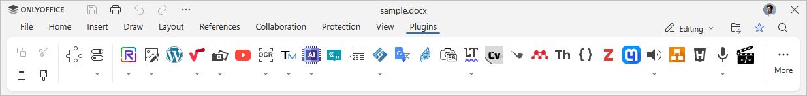
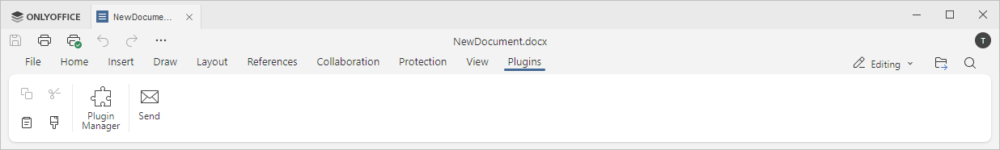

Kartica Dodaci
Kartica Dodaci u Uređivaču dokumenata omogućava pristup naprednim funkcijama uređivanja koristeći dostupne dodatke trećih strana.
Odgovarajući prozor u Online Uređivaču dokumenata:

Odgovarajući prozor u Desktop Uređivaču dokumenata:

Dugme Upravljač dodacima omogućava prikaz i upravljanje svim instaliranim dodacima, kao i dodavanje novih.
Dugme Dodaci u pozadini omogućava prikaz liste dodataka koji rade u pozadini. Ovde možete aktivirati ili deaktivirati dodatke pomoću odgovarajućih prekidača i podesiti njihova podešavanja klikom na dugme Više pored željenog dodatka.
Počevši od ONLYOFFICE Docs verzije 8.2, urednici ne dolaze sa dodacima po defaultu. Dodaci se instaliraju putem Upravljač dodacima.
Trenutno su sledeći dodaci dostupni po defaultu:
- Slanje omogućava slanje dokumenta putem e-pošte koristeći podrazumevani desktop mejl klijent (dostupno samo u desktop verziji),
- Isticanje koda omogućava isticanje sintakse koda biranjem odgovarajućeg jezika, stila i boje pozadine,
- OCR omogućava prepoznavanje teksta sa slike i njegovo umetanje u tekst dokumenta,
- Uređivač fotografija omogućava uređivanje slika: sečenje, okretanje, crtanje linija i oblika, dodavanje ikona i teksta, upotrebu maski i filtera kao što su sivilo, inverzija, sepija, zamućenje, oštrenje, reljef, itd.,
- Govorna konverzija omogućava pretvaranje izabranog teksta u govor (dostupno samo u online verziji),
- Sinonimi i antonimi omogućava pronalaženje sinonima i antonima reči i njihovu zamenu,
-
Prevodilac omogućava prevođenje izabranog teksta na druge jezike,
Ovaj dodatak ne radi u Internet Exploreru.
- YouTube omogućava ugrađivanje YouTube video snimaka u dokument,
- Mendeley omogućava upravljanje naučnim radovima i generisanje bibliografija za naučne članke (dostupno samo u online verziji),
- Zotero omogućava upravljanje bibliografskim podacima i istraživačkim materijalima (dostupno samo u online verziji).
Dodatak WordPress može se koristiti ako povežete odgovarajuće servise u podešavanjima portala. Možete koristiti sledeća uputstva za server verziju ili za SaaS verziju.
Dodatak WordPress nije uključen u besplatnu verziju urednika.
U vaš dokument mogu se dodati i nekoliko vizuelnih dodataka. Dodaci će biti prikazani kao odgovarajuće ikone na levom panelu.
Za više informacija o dodacima, pogledajte našu API dokumentaciju. Svi postojeći primeri dodataka otvorenog koda dostupni su na GitHub-u.